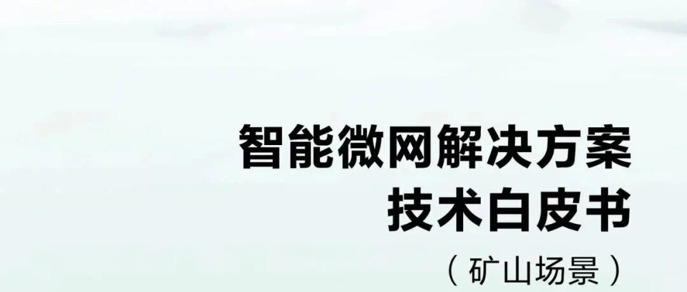

【场景】施耐德《为医院建设有弹性的高效微电网：从设计到融资》


注：文章为公开场合的公开资料，笔者仅是收集供同行一起学习，促进行业的发展与共同进步。
下载链接：【解决方案】华为智能微网解决方案技术白皮书（矿山场景）.pdf
欢迎免费关注，获取更多微电网方案：
微电网解决方案

【场景】施耐德《为医院建设有弹性的高效微电网：从设计到融资》
注：文章为公开场合的公开资料，笔者仅是收集供同行一起学习，促进行业的发展与共同进步。
下载链接：【解决方案】华为智能微网解决方案技术白皮书（矿山场景）.pdf
欢迎免费关注，获取更多微电网方案：